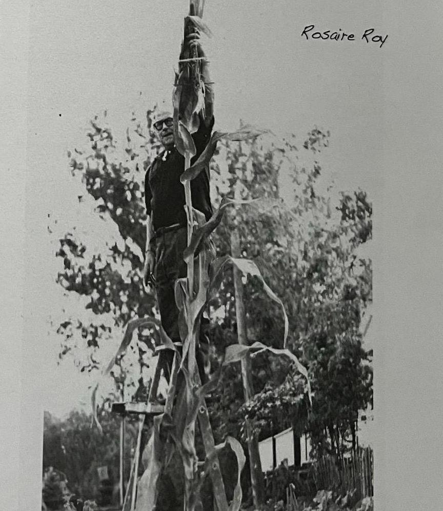
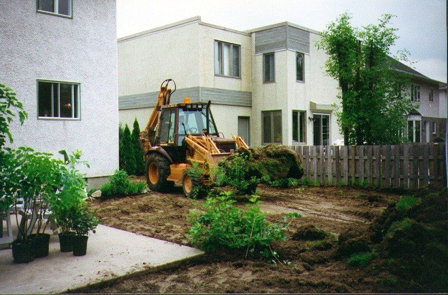
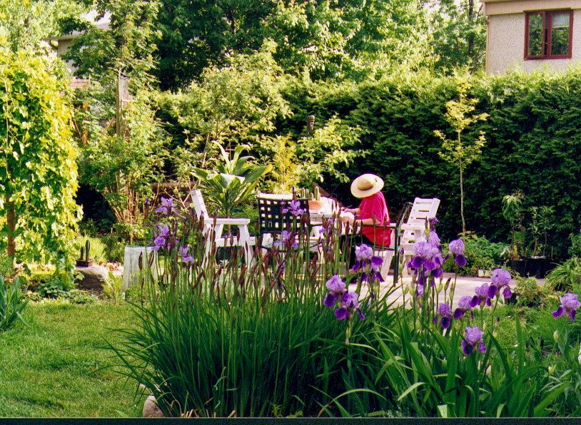

L’héritage
J’ai toujours vécu avec les plantes. Mon père jardinait pour nourrir sa famille, jusqu’à ce qu’il découvre le plaisir de jardiner. Le labeur se transformait en plaisir. C’est ainsi, qu’il a su vraiment prendre plaisir à la vie. Découvrir le plaisir d’être de la nature. Pour moi, ce fut la plus grande découverte de ma vie, voir un père industrieux et bourru se transformer en homme de nature heureux.
Ce faisant, je ne percevais rien de ça. Je travaillais parfois avec mon père dans son jardin, particulièrement lors des grandes corvées saisonnières, comme l’arrachage des cotons de blé-d’inde à la fin de l’été. Dans ces périodes de travail, le voisinage avec mon père n’était jamais particulièrement agréable, car il devait tout me montrer, moi qui ne savais rien. Mais, dans son univers, la pédagogie n’avait pas encore été inventée.
C’était plus agréable d’aller dans la nature avec Rosaire quand il n’y avait pas de labeur à accomplir. Nous y chassions souvent le petit gibier pour nourrir la famille. Que de lièvres avons-nous bouffé dans nos hivers froids ? Dans l’esprit de l’époque, nourrir la famille était la préoccupation principale.
Travailler à l’Acton Shoe, son gagne-pain, était pour lui une tâche qui permettait à sa femme et ses neuf enfants de vivre simplement. Le travail à l’usine n’était pas un lieu d’épanouissement…

Le jardin, voilà le lieu de l’épanouissement.
C’est la révélation que mon père m’a laissée. J’en parle, aujourd’hui, comme si tout cela semblait tout à fait naturel. Mon père avait semé en moi cet élan, mais il m’a fallu le découvrir par moi-même. Entre le jardin condimentaire de mon père, tout à fait rectiligne, où nous nettoyions à la terre à chaque automne, et mon jardin buissonnant de beauté et de liberté, il y a tout un monde, une génération. Une nouvelle approche.
Oui, mon père faisait pousser des légumes dans son jardin. Mais ces légumes arrivaient dans les mains de ma mère dans la cuisine.
Et ma mère Yvonne était une bonne cuisinière.
Oui, la cuisine traditionnelle québécoise, mais avec du talent et du goût. Ce qui nous a permis de bien manger et d’avoir beaucoup de légumes dans nos assiettes. C’est possiblement pourquoi j’ai une bonne santé et de bonnes habitudes alimentaires. C’est pourquoi aussi j’ai fait pousser des légumes toute ma vie d’adulte.
Mon frère Jean-Noël se remémore aussi des souvenirs du jardin de Rosaire et des façons simples de manger les produits du jardin.
« Un plant d’asperges qu’on ne pouvait manger, parce que c’était la plante favorite de maman.
Un bouquet d’échalote qui montrait sa superbe à l’extrémité de la plate-bande d’aussi loin que je me souvienne.
Un tas de compost qui avalait tous les résidus du jardin et nous récompensait avec une récolte de vers sur demande.
Une ligne de rosier sauvage souvenir de ses origines.
De la rhubarbe juteuse qui était défendue bec et ongle.
J’ai moi aussi participé et bénéficié de cet amour pour son lopin de terre. (Souper avec tomates, concombres, radis, salade et une tranche de pain beurré assis sur les marches du perron arrière). Aujourd’hui je remets un peu de mon héritage. »
Ma sœur Mariette se remémore aussi l’amour de la nature de son père : « Je me souviens quand nous marchions avec Rosaire, il prenait le temps d’arrêter et de remercier Dieu pour tant de beauté. Dans les jours où l’on vit cela aussi est un grand héritage. La nature est là, c’est à nous d’en faire partie. »
Il faut dire aussi qu’Yvonne jouait un rôle important dans le jardin. Elle avait ses coins à elle. Comme le plant d’asperges dont parle Jean-Noël et sa plate-bande de fleurs. Mais elle avait dû au départ jouer un rôle essentiel dans cette idée de créer un jardin. Car une mère est d’abord une pourvoyeuse et ce n’est pas certain que Rosaire avait eu spontanément cette vocation de jardinier. Je crois que pour lui ce fut une découverte. Car personne dans sa famille nombreuse, ne jardinait excepté lui.
Ce jardin qui devint son royaume était sans doute avant tout, au début, une autre corvée transformée en cadeau de la vie !
On ne finit jamais d’apprendre
La vie, c’est apprendre ou à laisser.
Le jardin est un lieu privilégié pour mettre à l’épreuve cette maxime pédagogique. La nature est un maître exigeant, mais indulgent, qui nous donne sans cesse à voir et à comprendre sans nous pointer du doigt.
Le jardin est un lieu où apprendre par le faire prend un sens très vivant ; un projet dans lequel on met à l’essai nos connaissances et nos compétences tout en constatant quotidiennement le résultat de nos efforts ; un processus cyclique dans lequel la correction des erreurs est possible et permet une amélioration continue. On découvre sa propre nature tout en collaborant aux lois de la nature. Nous ne sommes pas parfaits, mais nous sommes guidés par un feed-back incessant qui nous motive à continuer, de nos mains, à parfaire l’œuvre. Nous nous inscrivons dans la nature des choses, dans l’avenir de notre vaisseau spatial, Terre.
Non, non, ce n’est pas une journée pédagogique sur l’avenir des jardins et de notre planète ; le jardinage n’est pas qu’une philosophie, c’est une activité de plein air dans laquelle le corps prend tout sens : nous avons les mains sales, les souliers boueux ; nous travaillons avec et dans la matière. Mais nous marchons aussi «pieds nus dans l’aube» pour le plaisir d’exister dans un univers dont nous sommes et qui est nôtre. Ce jardin est un gymnase personnel, sans tapis roulant, ni autre moteur que la force que j’y déploie. Au mieux de ma forme, le travail est un plaisir, si je me laisse aller, le travail devient une corvée.
Notre jardin à Longueuil
Depuis plus de dix ans, je cultive un petit terrain de banlieue à Longueuil. D’un gazon mur à mur, au départ, le terrain s’est transformé en forêt miniature, prolongement du parc régional situé tout près. Graduellement, l’ajout de plantes indigènes, le plus souvent comestibles, quelques fois médicinales, ont été privilégiées. Des petits fruits de toutes sortes, sources agréables de vitamines et de nutriments essentiels à la santé viennent compléter le paysage. L’horticulture écologique, c’est-à-dire en accord avec la nature, marie plantes condimentaires et beauté pour créer un aménagement qui nourrit le corps et l’esprit.
Quand nous sommes arrivés, ma conjointe et moi, nous avons pris un terrain de banlieue conventionnel pour le transformer en un petit coin de campagne, en une forêt miniature. Nous sommes devenus des fermiers urbains à échelle réduite. Un grand chêne, épargné par les constructeurs, était pris au collet d’un besoin de platitude d’un terrain droit, bien au-dessus du niveau du sol original. Comme un rare témoin de la forêt qui a précédé nos bungalows, la place d’honneur lui revenait pour la suite du monde. Nous avons donc dégagé cet arbre, ce qui a donné au terrain une perspective nouvelle. En redonnant à cet arbre, son espace vital et de meilleures conditions de croissance, nous en avons reconfiguré l’espace pour en faire un prolongement de la forêt du parc régional.

L’esprit du jardin
Ce jardin témoigne de mon approche de la culture, Bio, parce que la vie est avant tout ce que l’on désire prolonger.
Dix ans plus tard, je ne cultive presque plus, j’entretiens un petit royaume, qui a sa vie propre. Cette vie n’est pas sous mon contrôle, elle a sa destinée ; d’intervenant, je me suis transformé en collaborateur pour le simple plaisir de participer à la beauté du monde et aux bienfaits de la nature.
Le jardin est un espace de création ; quel plaisir de créer avec des éléments vivants qui redessinent, au gré de leur vitalité, ce que vous avez imaginé ! Et ici, pas besoin de logiciels compliqués ; les algorithmes sont intégrés dans la nature, les fractales sont comprises à la plantation. Un jardin est un lieu d’apprentissage valorisant et motivant, car nous avons, chaque jour, au gré des saisons, le résultat de notre travail devant les yeux. Tous nos autres sens y participent, en plus de développer notre sens de l’observation et notre compréhension rationnelle des lois de la nature, donc de notre propre nature. L’observation, voilà une qualité méconnue de tout jardinier sympathique aux méthodes douces d’intervention. Le plaisir est dans la forme, au sens physiologique et esthétique du terme.
La nature nous renvoie une image de nous-mêmes, qu’il nous faut sans cesse améliorer. Bien sûr, ce jardin ne répond pas aux canons esthétiques du terrain de banlieue bien ordonné et aux lignes droites bien tracées. Il correspond à mon image et à ma compréhension de la nature qui va rarement d’un point à un autre, sans divaguer.
Quelle joie de s’éveiller aux chants, des oiseaux plus nombreux, chaque année et aux gazouillements de la fontaine, qui rythment la vie du jardin.

Cycles et patience
Un coin de ma cour sert de boucle de rétroaction : là où une partie de ce que le jardin a produit retourne à la terre, recyclée en matière organique pour nourrir à nouveau le cycle. Le compostage me rappelle constamment que rien ne se perd dans la nature. Il est surprenant de constater la générosité d’un petit espace. Le jardin m’a appris la patience. Observer d’abord le terrain dans ses transformations lentes, comprendre comment la lumière voyage au fil des saisons, voir où l’eau se rassemble au printemps. Les grands gestes viennent d’abord — ceux qui façonnent le relief et donnent structure au rêve. Mais même ces interventions majeures se font en dialogue avec ce qui est déjà là.
Les arbres croissent année après année, certains deviennent des géants qui redessinent l’ombre et la lumière. Il faut imaginer le jardin, non pas tel qu’il est, mais tel qu’il deviendra — visualiser l’été dans sa plénitude, l’automne dépouillé et l’hiver qui révèle ses structures. Les conifères et les persistants deviennent alors des présences essentielles, gardiens du jardin endormi. J’ai appris à privilégier les vivaces qui reviennent fidèlement, tout en laissant quelques espaces aux annuelles — ces surprises éphémères qui apportent leur légèreté. Les roches deviennent des ancres visuelles quand la végétation se retire. Un petit bassin d’eau ajoute son chant aux gazouillements du jardin.
Au fil des années, j’ai découvert que la diversité crée l’équilibre. Un jardin riche en variété trouve sa propre régulation, développe ses propres défenses, devient un petit écosystème qui s’autorégule. Le jardinier peut alors se retirer un peu, observer, accompagner plutôt que diriger.
Transmission
Malgré toutes ces différences,
c’est encore mon père qui jardine.
Mon jardin, une part de l’œuvre de ma vie, est un réseau convivial comme je l’avais imaginé avec des moyens technologiques. Mais la vie est le réseau le plus énergétique et convivial que je connaisse, et je suis heureux d’en faire partie.
Mon jardin me sert maintenant de toile de fond ou de tapisserie pour mes nouveaux collages : Paysages choisis.